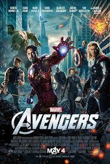
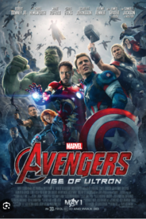
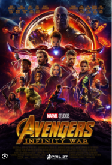
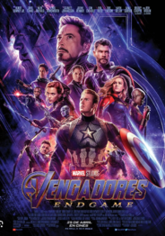

|  | The Avengers | 27 de abril de 2012 |
|  | The Avengers Age of Ultron | 29 de abril de 2015 |
|  | Vengadores Infinity War | 27 de abril de 2018 |
|  | Vengadores EndGame | 26 de abril de 2019 |
| Maradona: Sueno bendito | 29 de octubre de 2023 | |
| CRISTIANO RONALDO El mundo a sus pies | 9 de noviembre de 2015 |